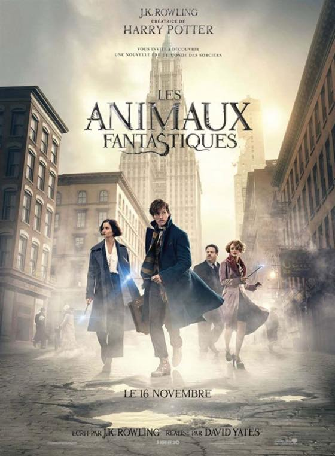

미씽: 사라진 여자 2016
재미있게 잘 봤다. 많은 생각을 하게 해줌.
----여기서부터는 비행기에서 본 영화들
닥터 스트레인지 2016
시각 효과가 넘 압도적. 영화관에서 못본게 후회되넴
럭키 2016
딱 기대한 만큼 ㅋㅋㅋㅋㅋ
켈켈거리면서 잘 봤습니다

신비한동물사전 2016
에디 레드메인 배우 매력있다. 데니쉬걸도 보고싶어짐.
뉴욕에서 돌아오는 비행기안에서 본거라 더 인상깊음 :)
아기배달부 스토크 2016
무엇보다 감탄스러운건 황새캐릭터로 어쩜 저렇게 직장일 모습을 잘 그려냈지? ㅋㅋㅋ 대단하다
애기보고 awwwww 하는거 느므 공감 ㅋㅋㅋㅋㅋㅋㅋㅋㅋㅋ